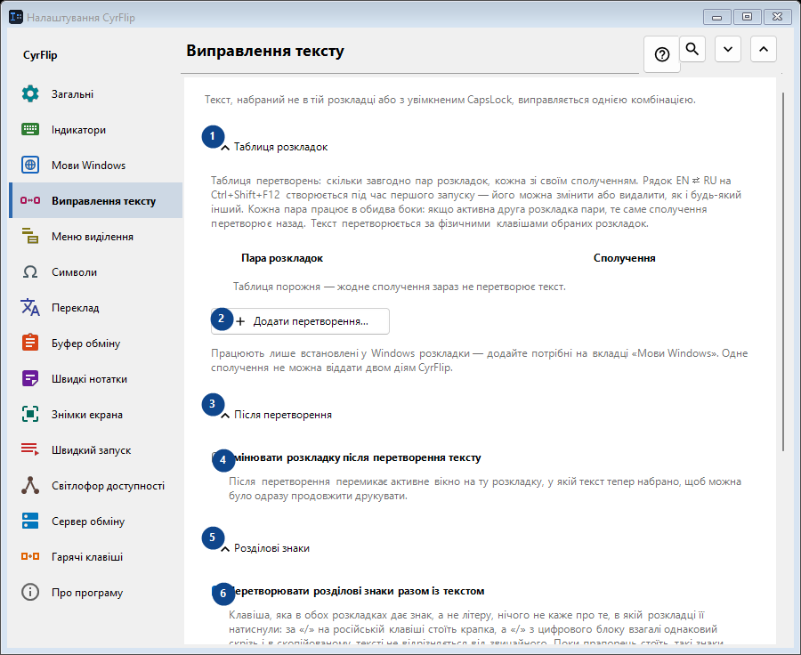
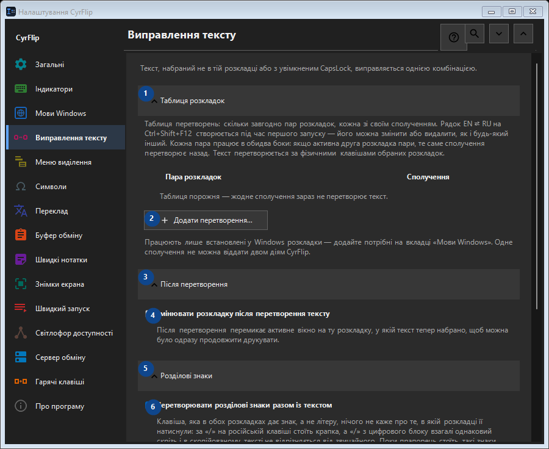

Виправлення тексту
Для чого це вікно
Текст, набраний не в тій розкладці або з увімкненим CapsLock, виправляється однією комбінацією.


Порядок дій
Налаштування застосовуються одразу. Обов’язкового порядку немає; користуйтеся групами нижче.
Елементи
1. Таблиця розкладок
Скористайтеся командою, коли потрібна вказана дія. Прочитайте запит підтвердження перед згодою.
Ваші сполучення клавіш2. Додати перетворення...
Скористайтеся командою, коли потрібна вказана дія. Прочитайте запит підтвердження перед згодою.
Ваші сполучення клавіш3. Після перетворення
Скористайтеся командою, коли потрібна вказана дія. Прочитайте запит підтвердження перед згодою.
Ваші сполучення клавіш4. Змінювати розкладку після перетворення тексту
Після перетворення перемикає активне вікно на ту розкладку, у якій текст тепер набрано, щоб можна було одразу продовжити друкувати.
Ваші сполучення клавіш5. Розділові знаки
Скористайтеся командою, коли потрібна вказана дія. Прочитайте запит підтвердження перед згодою.
Ваші сполучення клавіш6. Перетворювати розділові знаки разом із текстом
Клавіша, яка в обох розкладках дає знак, а не літеру, нічого не каже про те, в якій розкладці її натиснули: за «/» на російській клавіші стоїть крапка, а «/» з цифрового блоку взагалі однаковий скрізь і в скопійованому тексті не відрізняється від звичайного. Поки прапорець стоїть, такі знаки перетворюються разом із текстом - так CyrFlip поводився завжди. Зніміть його, якщо частіше набираєте їх навмисно: тоді «/ghbdtn» збереже свій слеш замість того, щоб початися з крапки. Знаки, на клавіші яких в іншій розкладці стоїть літера (кома, дужки), перетворюються в будь-якому разі.
Ваші сполучення клавіш7. Регістр
Скористайтеся командою, коли потрібна вказана дія. Прочитайте запит підтвердження перед згодою.
Ваші сполучення клавіш8. Виправити CapsLock
Змінює верхній і нижній регістр виділеного тексту; зручно після випадково ввімкненого CapsLock.
Ваші сполучення клавіш9. Змінити - Виправити CapsLock
Скористайтеся командою, коли потрібна вказана дія. Прочитайте запит підтвердження перед згодою.
Ваші сполучення клавіш10. Синхронізувати CapsLock після виправлення регістру
Змінює фізичний стан CapsLock після виправлення регістру, щоб наступні натискання відповідали виправленому тексту.
Ваші сполучення клавіш